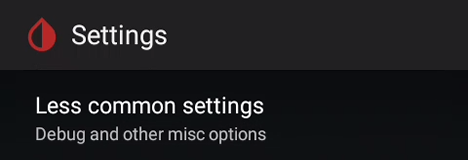
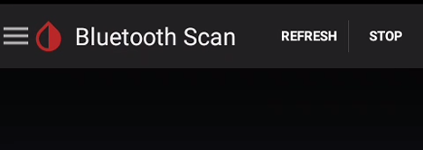

Libre and bridge
Many NFC to Bluetooth bridges are available on the market for Libre sensors.
A pioneer needs to be recorded here. Thank you Joern for the LimiTTer. You need to remember this name as it will appear as the default bridge name when the actual device is not identified. Unless you actually have a LimiTTer, seeing this name means your bridge is not connected to xDrip+.
xDrip+ supports some of them for some sensors.
Libre Pro/H/2 US/2 CA are not supported.
Here below a compatibility table for most popular bridge devices, for compatible models minimum firmware version is indicated.
| Bridge brand | - Libre 1 - | - 14 days US - | - Libre 2 EU - |
|---|---|---|---|
| BluCon | Yes |
4.2** |
4.2* |
| miaomiao | Yes |
39** |
39* |
| miaomiao2 | Yes |
7** |
7* |
| Bubble | Yes |
2.6** |
2.6* |
| Bubble mini | Yes |
2.6** |
2.6* |
Note:
* external add-on required
** external add-on required, not compatible with Android 10+
Bridge settings
Before trying to connect your bridge verify your settings are correct to avoid frequent disconnections.
Menu / Settings / Less Common Settings / Bluetooth Settings




If your bridge loses connection and scanning Bluetooth allows you to recover, enable Use scanning.

For Samsung phones disable Trust Auto-Connect!
For Android version 8 and above you can enable Use Background Scans
If your bridge is a Transmitter_T or a Droplet enable this else keep it disabled.
If you have connection losses you can enable polling mode. It will not do anything useful but keep the Bluetooth link awake.
If your bridge is a BluCon you can enable this else keep it disabled.
Note: only BluCon bonds to Android, other bridges don't.
Restart your phone to make sure all parameters are being taken into account.
Connect Bluetooth bridge
Make sure your bridge is not connected to anything else: any other device and any other app then scan Bluetooth.
Menu / Bluetooth Scan

If your bridge doesn't show up make sure it's fully charged (or has a new battery) and reset it.
Once visible select it.
Position it correctly on your sensor. Some bridges have very little tolerance in respect with angle and distances to the sensor.
Continue to Start sensor.